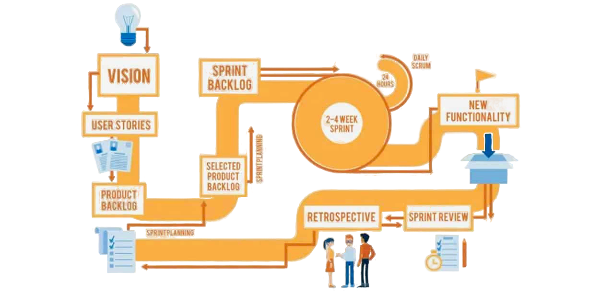
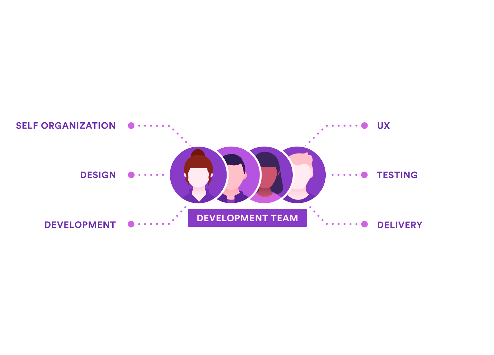

EduScrum
Гибкая методология SCRUM в образовательном процессе
← → или клик мыши
SCRUM

EduScrum — адаптация бизнес-методологии Scrum для образования, где учащиеся, работая в командах, берут ответственность за обучение, разбивая учебные задачи на короткие циклы (спринты).
Product Owner в EduScrum

Педагог/учитель. В данной модели он определяет цели проекта и требования
к результатам процесса.
Scrum Master

Лидер группы - старший ученик - организует образовательный процесс,
устраняет препятствия и поддерживает команду.
Команда

Группа обучающихся, совместно работающих
над достижением целей проекта.